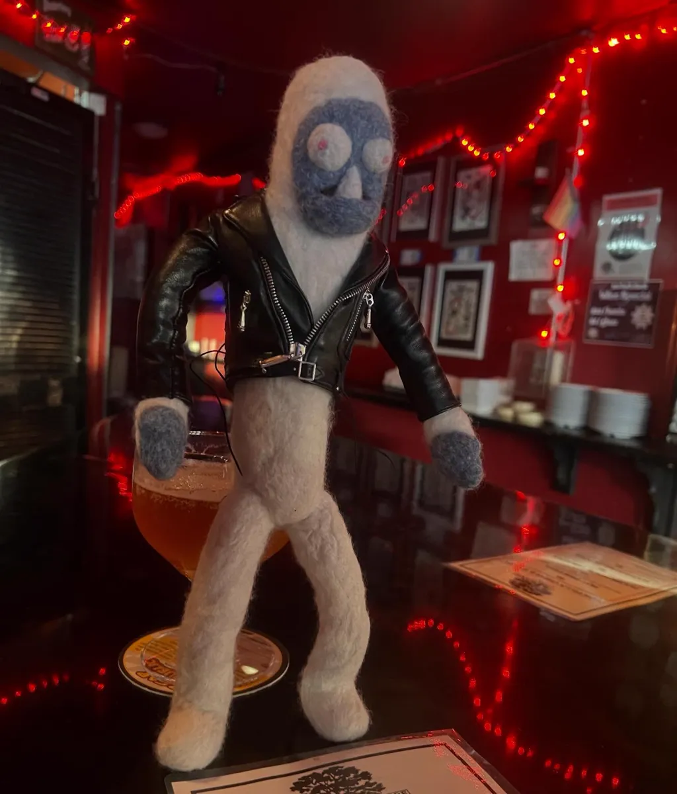
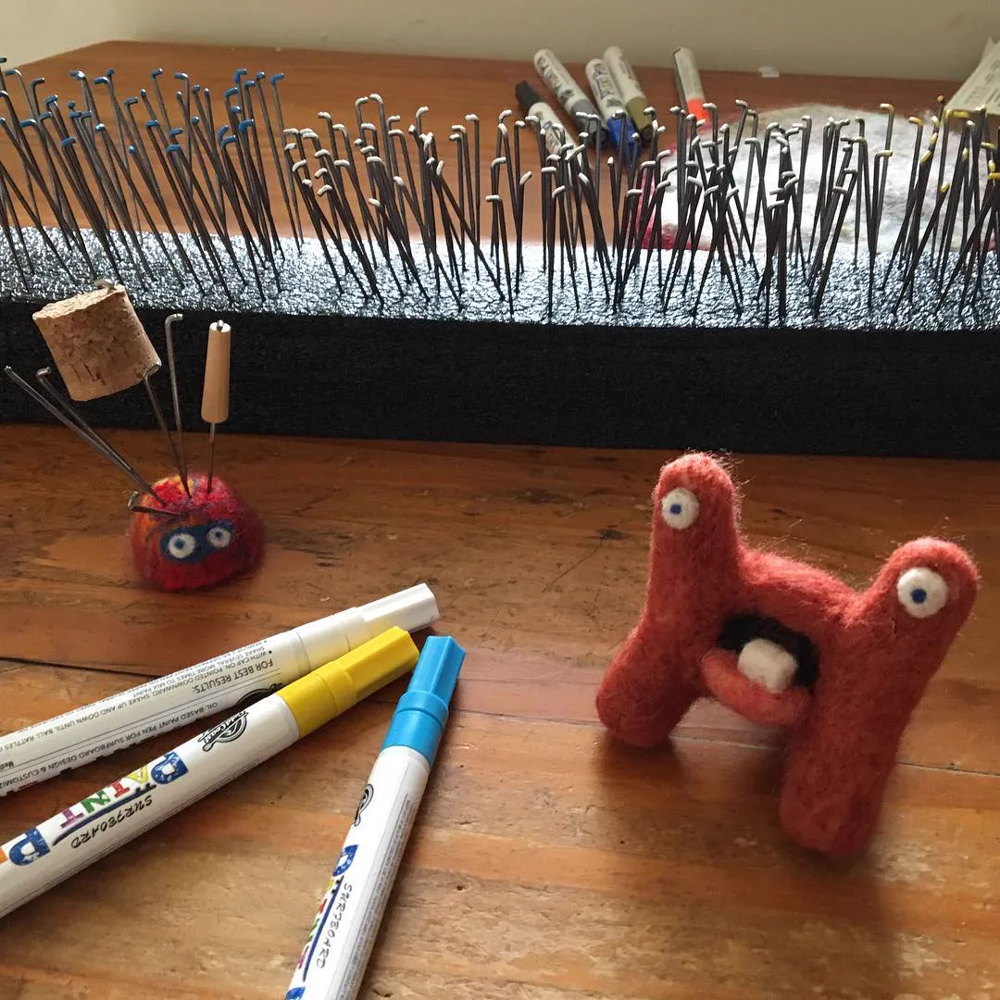

Chapter VIII · Character / Physical Making
Freddi Yeti
Freddi Yeti is my own studio, started in 2017. It began with needle-felted monsters and grew into a cast of characters, animations, and workshops where I teach other people how to make their own.
I make the characters, build their personalities, animate them, photograph them, and figure out how to turn the process into something other people can learn.
- Character design
- Stop-motion & animation
- Teaching

The cast
Freddi was the beginning, but he was never going to stay alone.
Over time I built a growing cast of characters, each starting with a sketch and a personality before becoming wool. Hectrix, the Lil Biggies, Auggy Boggy, Uggy Buggy, and the others all have their own shapes, expressions, and ways of behaving.
In motion
I experimented with stop-motion and 2D animation to give the characters a chance to act rather than simply sit on a shelf. The animations became another way to develop their personalities and see what they could do.
How they’re made
Every Freddi starts with an idea, then a sketch, then a pile of wool.
Needle felting is a slow, physical process. I developed my own ways of organizing the materials and tools so I could work efficiently without losing the handmade quality of the finished character.
Even something as small as painting the tips of my felting needles by size is part of that process. It means I can grab the right tool without stopping to check.

Teaching the process
Eventually I started teaching other people how to make their own Freddis.
That meant figuring out how to explain a process that had become intuitive to me. The workshops became another part of the studio: not just making characters, but figuring out how to help someone else make one.
That same instinct shows up elsewhere in my work. I like making something myself, understanding how it works, and then finding a way to make the process approachable for someone who is doing it for the first time.